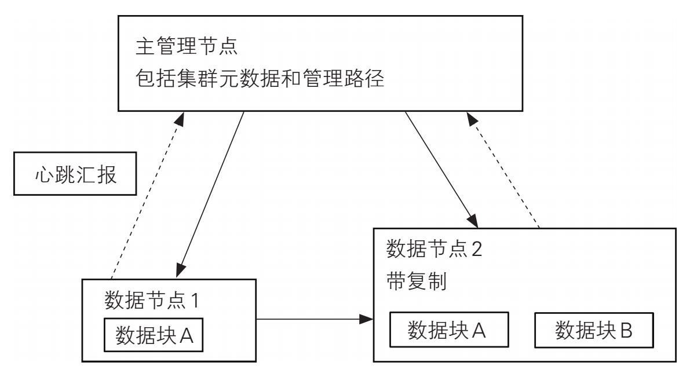
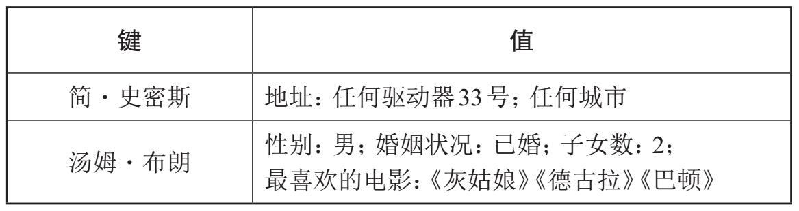
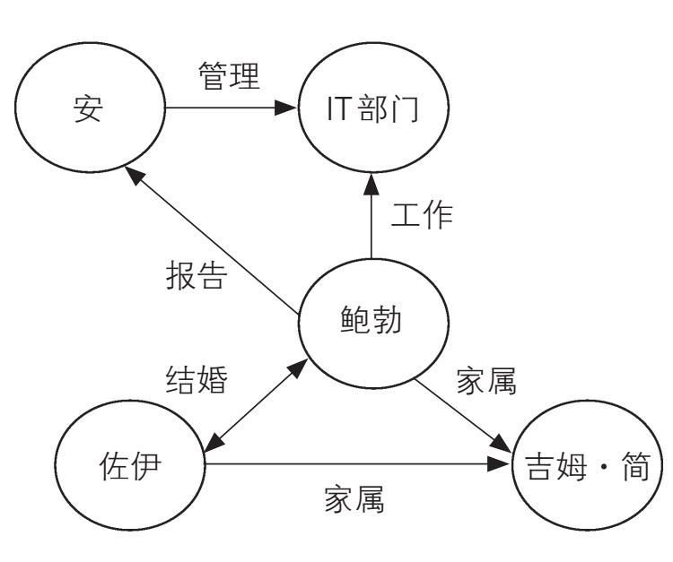
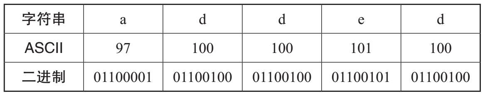
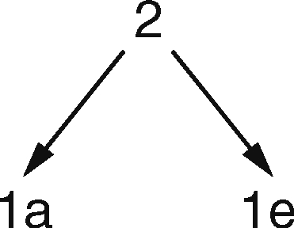
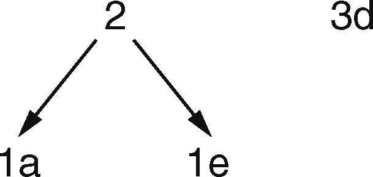
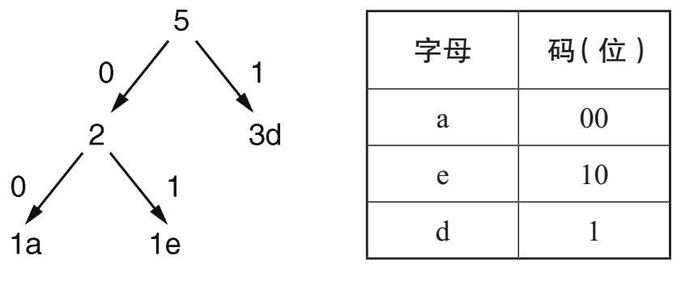

IBM公司在加利福尼亚州圣何塞开发和销售的第一款硬盘驱动器的存储容量约为5Mb，存储在50个磁盘上，每个磁盘直径有24英寸。在1956年的时候，这绝对是尖端技术。作为大型计算机的组成部分，该硬盘驱动器体积庞大，重量超过一吨。到1969年“阿波罗11”号登月时，美国宇航局在休斯敦的载人航天中心使用的大型计算机每台都有高达8Mb的内存。令人惊讶的是，由尼尔·阿姆斯特朗驾驶的“阿波罗11”号登月飞船的机载计算机只有64Kb的内存。
计算机技术发展迅速。到20世纪80年代个人计算机热肇始之时，个人计算机硬盘驱动器的平均容量是5Mb。此时硬盘驱动器是选配的硬件，有些计算机就没有硬盘驱动器。今天，5Mb只够存储一两张图片或照片。计算机存储容量增长迅猛，虽然个人计算机存储量落后于大数据存储，但近年来也大幅增加。现在，你可以购买到配备8Tb硬盘甚至更大的个人电脑。闪存现今的存储空间也达到了1Tb，足以存储约500小时的电影或超过30万张照片。这样的存储空间似乎已经很大，但当我们将其与每天产生的估计能达到2.5Eb的新数据相比时，它们立26 刻就显得相形见绌。
一旦从真空管到晶体管的变化在20世纪60年代被触发后，放到芯片上的晶体管数量的增长就一发不可收。增长速度大致符合我们将在下一节讨论的摩尔定律。尽管有预测说小型化即将达到极限，但在到达极限前的进一步小型化仍然合理且价值连城。我们现在可以将数十亿个计算速度越来越快的晶体管植入同一块芯片，这样我们就可以存储更多的数据。与此同时，多核处理器和多线程软件也使得处理这些数据成为现实。
摩尔定律
1965年，英特尔的创始人之一戈登·摩尔曾预测道，在未来十年内，芯片中包含的晶体管数量将每二十四个月增加一倍。该预测在业内家喻户晓。1975年，他修改了自己的预测，认为芯片的复杂度将每十二个月翻一番并能持续五年，然后退回到每二十四个月增加一倍。摩尔的同事戴维·豪斯通过对晶体管增长速度的评估，认为微芯片的性能 每十八个月就会增加一倍，这是当前摩尔定律最新的预测数值。事实证明，新的预测值非常准确。自1965年以来，计算机确实变得越来越快、越来越便宜、越来越强大，但摩尔本人认为这一“定律”很快就会失效。
根据米歇尔·沃尔德罗普2016年2月发表在科学期刊《自然》上的文章，摩尔定律的失效确实近在咫尺。微处理器是专门负责执行计算机程序指令的集成电路。它通常由数十亿个晶体管组成，晶体管嵌入硅微芯片的微小空间里。每个晶体管中的栅极能使它被接通或断开，用以存储0和1。极小的输入电流通过每个晶体管的栅极，并在栅极闭合时产生放大的输出电流。27 米歇尔·沃尔德罗普对栅极间的距离尤感兴趣，目前顶级微处理器栅极的间隙是14纳米。他表示由于集成电路的进一步密集化，芯片过热以及如何有效散热等问题正制约着摩尔定律所预测的指数级增长。这也使我们注意到摩尔所言的迅速接近的基本限度。
纳米的尺寸是10—9 米或百万分之一毫米。拿其他物体来做个比较，人的头发直径约为7.5万纳米，原子的直径在0.1纳米到0.5纳米之间。供职于英特尔的保罗·加尔吉尼宣称，栅极间隙的极限为2纳米或3纳米。极限到来之日并不遥远——也许21世纪20年代就能见证。沃尔德罗普推断：“在那样小的间隙之下，电子的行为将受控于量子不确定性，结果是晶体管变得无可救药般不可靠。”正如我们将在第七章中看到的那样，量子计算机（一种仍处于起步阶段的技术）有望最终能提供这一问题的解决方案。
摩尔定律现在也适用于数据的增长率，因为数据的增长似乎每两年大约翻一番。随着存储容量的扩大和数据处理能力的增强，数据也会增加。我们都是大数据的受益者。正是由于摩尔定律预测的成指数级增长的大数据，奈飞、智能手机、物联网（对连接到互联网的大量电子传感器所组成的万物互联的简便说法），以及云计算（将服务器连在一起的全球网络）等这一切才成为可能。所有这些新生事物生成的数据必须得到存储，下面我们将对此展开讨论。
结构化数据存储
每当我们使用个人计算机、笔记本电脑或智能手机的时候，28 都是在访问存储在数据库中的数据。结构化数据（例如银行对账单和电子地址簿）存储在关系数据库中。为了管理这些结构化数据，需要使用关系数据库管理系统（RDBMS）来创建、维护、访问和控制数据。第一步是设计数据库模式，即数据库的结构。为了实现这一点，我们需要确定数据字段并将它们排列在表中，然后我们再确定数据表之间的关系。一旦完成了上述工作并构建数据库之后，我们就可以填充数据到数据库中，并使用结构化查询语言（SQL）对其进行检索。
显然，数据表的设计必须要认真对待，否则后续的改动会大费周章。但是，关系模型的价值不应被低估。对于很多结构化数据应用程序来说，它快速且可靠。关系数据库设计的一个重要考量被称为规范化 ，它包括最大化地降低数据的重复，从而降低存储的压力。数据的访问会因此变得快捷，但即便如此，随着数据量的增加，这种传统数据库性能的下降也不可改变。
问题主要关涉可扩展性。由于关系数据库基本上只能在一台服务器上运行，所以随着数据库容量的逐渐增大，它就会变得缓慢且不可靠。维持可扩展性的唯一方法是增加计算能力，但计算力是有限度的。这被称为垂直扩展性 。因此，虽然有关系数据库管理系统存储和管理结构化数据，但是当数据过大时（如Tb或Pb及以上级），关系数据库管理系统就不再能有效工作，即使对于结构化数据来说也是如此。
关系数据库的重要特性和持续使用它们的理由，在于它们符合以下属性组，即原子性、一致性、独立性和持久性（简称ACID）。原子性确保不完整的处理（操作）无法更新数据库；一致性排除无效数据；独立性保证一个处理不会干扰另一个处29 理；持久性意味着数据库必须在执行下一个处理之前更新。所有这些都是理想的属性，但存储和访问大数据需要采用不同的方法，因为大数据基本都是非结构化的。
非结构化数据存储
对于非结构化数据来说，由于多种原因，关系数据库管理系统不再适用。关系数据库模型一旦构建完毕，就很难对其进行更改。这是甚为棘手的难题。此外，非结构化数据无法被方便地组织成行和列。正如我们所看到的，大数据通常是高速且实时生成的，需要得到实时处理。因此，尽管关系数据库管理系统使用范围广泛，而且也确实为我们提供了很好的服务，但鉴于目前数据的爆炸式增长，需要深入研究新的存储和管理技术。
为了存储海量数据集，数据被分配到不同的服务器上。随着所涉及的服务器数量的增加，出现故障的概率也随之增大。因此，将相同数据的多个副本存储在不同的服务器上就变得尤为重要。实际上，由于现在处理的数据量巨大，系统故障已经难以避免。数据存储已经内置了新的方法，以便应对这一难题。那么如何满足速度和可靠性（这两个相互矛盾）的双重需求呢？
海杜普分布式文件系统
分布式文件系统（DFS）为分布在多个节点的众多计算机上的大数据提供了高效且可靠的存储。谷歌公司于2003年10月发表了一篇研究论文，该文是针对谷歌文件系统的推出而专门撰写的。在该论文的启发下，当时在雅虎工作的道格·卡廷和他的同事——华盛顿大学的研究生迈克·卡弗雷拉，开始了30 海杜普分布式文件系统的开发。海杜普是最受欢迎的分布式文件系统之一，它是一个名为海杜普生态系统的更大型开源软件项目的一部分。海杜普的命名取之于卡廷儿子的黄颜色大象软玩具，以流行的编程语言Java编写。在你使用脸书、推特或易贝（eBay）的时候，海杜普就会一直在后台运行。它不仅存储半结构化和非结构化数据，并且提供数据分析平台。
当我们使用海杜普分布式文件系统时，数据分布在许多节点上——通常是数万个节点，遍布于世界各地的数据中心。图4显示了单个海杜普分布式文件系统集群的基本结构，该集群由一个主管理节点和许多从属的数据节点组成。

图4 海杜普分布式文件系统集群简略图
主管理节点处理来自客户端计算机的所有请求。它分配存储空间，并跟踪存储的有效性和数据的位置。它还管理基本文件操作（例如打开和关闭文件），并控制客户端计算机的数据访问。数据节点负责实际的数据存储，为此会根据需要创建、删除和复制数据块。31
数据复制是海杜普分布式文件系统的基本特性。从图4中我们看到，数据块A同时存储在数据节点1和数据节点2中。重要的是，将数据块存储为多个副本，以保证在一个数据节点失效时，其他节点能够接管并继续处理任务而不至于丢失数据。为了跟踪哪些数据节点（如果有的话）已经失效，主管理节点每隔三秒会从各数据节点接收一条消息，也就是网络心跳监测 。如果没有收到消息，则可推测所关涉的数据节点已经停止运行。因此，如果数据节点1无法发送心跳汇报，则数据节点2将成为操作数据块A的数据节点。如果主管理节点丢失，情况就不同了，在这种情况下，必须要使用内置备份系统。
数据只被写入数据节点一次，但应用程序将从中多次读取。每个数据块通常只有64Mb，因此有很多很多的数据块。主管理节点的另一个功能是，确定在当前使用条件下哪一个为最佳数据节点，从而确保快速访问和处理数据。随后，客户端计算机就从所选出的最佳节点访问数据块。数据节点会随存储的需要适时添加，这一特征被称为水平可扩展性 。
与关系数据库相比较，海杜普分布式文件系统的一个主要优点是：你可以收集大量数据，并不断添加数据，而且此时无须明了以后这些数据有何种用途。比如，脸书就使用海杜普来存储其不断增加的数据。任何数据都不会丢失，因为海杜普以原始格式存储所有的内容。根据需要添加数据节点很廉价，也不需要对现有节点进行更改。如果先前的节点变得冗余，也很容易让它们停止运行。正如我们所看到的，具有可识别的行和列的结构化数据存储在关系数据库管理系统中较为容易，而非结构化数据则可以使用分布式文件系统存储，这样做不仅廉价，而32 且方便。
用于大数据的非关系型数据库
NoSQL是Not Only SQL的缩写，意为“不仅是SQL ”，它是非关系型数据库的统称。为什么需要一个不使用结构化查询语言的非关系型模型？我们可以简短地回答说：非关系型模型可以使我们不断添加新数据。非关系型模型具有管理大数据所必备的基本功能，即可扩展性、有效性和高性能。使用关系数据库，我们无法保证在不丧失功能的情况下进行数据的持续垂直扩展，而使用非关系型数据库，则可以通过水平扩展保持数据库的高性能。在描述非关系型分布式数据库基础架构，以及阐明其适用于大数据的原因之前，我们先要了解CAP定理。
CAP定理
2000年，美国加州大学伯克利分校计算机科学教授埃里克·布鲁尔提出了CAP定理，CAP分别指一致性（C）、可用性（A）和分区容错性（P）。对于分布式数据库系统来说，一致性要求同类节点中存储的数据相同。因此，在前文的图4中，数据节点1中的数据块A应该与数据节点2中的数据块A相同。可用性要求如果某个节点发生了故障，其他节点仍然能继续运行——如果数据节点1发生故障，数据节点2必须要继续运行。由于数据和数据节点分布在互为物理隔断的服务器上，这些机器之间的通信难免有时会失败。通信失败的情况被称为网裂 。分区容错性要求，即便发生了这种情况，系统也要继续运行。
CAP定理的精髓在于，对于任何共享数据的分布式计算机系统来说，只能同时满足上述三个标准中的两个。因此，系统有如下三种可能性：具有一致性和可用性；具有一致性和分区容33 错性；或者具有分区容错性和可用性。请注意，由于在关系数据库管理系统中，网络未进行分区，因此只涉及一致性和可用性，并且关系数据库管理系统模型也同时满足这两个标准。在非关系型数据库中，由于分区是必然的存在，因此我们必须要在一致性和可用性之间做出选择。通过牺牲可用性，我们可以得到一致性。如果我们选择牺牲一致性，那么数据有时候会因服务器不同而有差异。
首字母缩略词BASE可以便捷地描述这种情况。这个缩略词有点像人为杜撰的，它指的是“基本可用（BA）、软状态（S）和最终一致（E）”。选择BASE的目的，是为了与关系数据库的ACID属性进行比照。在这里，“软状态”指的是对一致性要求的灵活性，可以允许有一段时间数据的不同步。最终目的是不放弃这三个标准中的任何一个，找到优化三者的方法，以达成妥协。
非关系型数据库的架构
由于结构化查询语言的无效，才有了非关系型数据库的诞生。例如，对于我们在图4中看到的连接查询，结构化查询语言是做不到的。非关系型数据库有四种主要类型：键值存储数据库、列存储数据库、文档型数据库和图形数据库。它们对于存储大型结构化和半结构化数据都非常有用。最简单的是键值存储数据库，它由一个标识符（键 ）和与该键相关的数据（值 ）组成，如图5所示。请注意，此处的“值”可以包含多个数34 据项。

图5 键值存储数据库
当然，有很多这样的键值对，添加新键值或删除旧键值都非常简单，这赋予了数据库高度的水平可扩展性。查询给定键的值是数据库的主要功能。比如，使用键“简·史密斯”，我们可以找到她的地址。对于大数据来说，键值存储数据库为存储提供了快速、可靠且易于扩展的解决方案，但由于没有合适的查询语言，它的优势受到了限制。列存储数据库和文档型数据库是键值存储数据模型的扩展。
图形数据库遵循不同的模型，在社交网站中很受欢迎，并且在商业应用程序中也能大显身手。这些图形通常非常大，特别是用于社交网站的时候。在数据库中存储图形时，信息存储在节点（即顶点）和边线中。例如，图6中的图形显示了五个节点，它们之间的箭头表示关系。添加、更新或删除节点都会更改图形。

图6 图形数据库35
在此示例中，节点是姓名或部门，边线反映的是它们之间的关系。通过查看边线中的关系实现从图形数据库中检索数据。例如，如果我想查询“IT部门中有子女的员工的姓名”，就会发现鲍勃同时满足这两个条件。值得注意的是，这不是有向图——我们不遵循箭头的指向，我们寻找的是关联。
目前，一种名为“新型数据库”（NewSQL）的检索方法正崭露头角。通过整合非关系型数据库的运作方式和关系型数据模型的ACID属性，这项潜在技术的目的是解决关系型数据模型存在的数据扩展问题，使其更适用于大数据。
云存储
像许多现代计算机术语一样，“云”（Cloud）听起来不仅友好、舒心、引人入胜，而且亲切熟悉。但如前文所述，“云”实际上只是相互连接的服务器所组成的网络的一种表达方式，它们分布在世界各地的数据中心。众多的数据中心连接在一起，构成了存储大数据的超级网络。
借助互联网，我们可以共享远程服务器上的应用。通过支付费用，就可以在由各公司提供的服务器上存储和管理我们的文件、运行应用程序等。只要你的计算机或其他设备具有访问云端的必备软件，你就能从世界上的任何地方查看文件，也可以授予其他人相同的权限。你还可以运行“驻留”在云端而不是本地计算机上的软件。这不仅是对互联网的简单访问，而且包括存储和处理信息，“云计算”因而得名。我们个人的云存储容量并不大，但积累起来的信息量则大得惊人。
亚马逊是最大的云服务提供商，但其管理的数据是商业秘36 密。我们可以透过2017年2月亚马逊云存储系统S3断网 （即服务丢失）这一事件来理解云计算的重要性。该断网事件持续了将近五个小时，导致了众多网站和服务的连接中断，其中包括奈飞、亿客行（Expedia）和美国证券交易委员会。亚马逊后来在报告中说此事件是人为错误所致，他们的一名员工无意间切断了服务器的网络。重启这些大型系统的时间比预期的长了很多，但最终得以成功完成。不管怎么说，这一事件暴露了互联网的脆弱性，无论是真正的误操作，还是恶意的黑客入侵，都可以让其崩溃。
无损数据压缩
据广受尊重的国际数据公司2017年的估计，当时的数字世界总共有16 Zb的数据量，相当于不可思议的16×1021 字节。最终，随着数字世界的不断成长，诸如哪些数据应该保存，应该保留多少副本，以及需要保留多长时间等问题，我们都必须要面对。定期清除数据或者对数据进行归档，这本身就是对大数据存在必要性的质疑。这样做不仅成本昂贵，并且可能会造成有价值数据的丢失，因为我们无法预知哪些数据在未来是重要的。随着存储的数据量的不断增加，为了最大限度地存储数据，数据压缩变得不可或缺。
由于收集到的电子数据质量良莠不齐，为要确保数据分析有效，在分析之前，必须要对其进行预处理，以便检查并解决一致性、重复性和可靠性方面的问题。如果我们要依赖从数据中提取的信息，那么一致性显然尤为重要。删除冗余的重复信息，对任何数据集来说都是良好数据管理的指标，而对于大数据，还有另外一层担忧，那就是，没有足够的存储空间来保存所有（重37 复的）数据。压缩数据可以减少视频和图像中的冗余，从而降低存储压力，而对视频来说，压缩数据可以提高流速率。
数字压缩分为无损和有损两种主要类型。在无损压缩 中，所有数据都被保留，因此这对于文本特别有用。例如，扩展名为“.ZIP”的文件已被压缩且没有丢失信息，因此对它们进行解压后，就会得到原始的文件。如果我们将字符串“aaaaabbbbbbbbbb”压缩为“5a10b”，就很容易明白压缩并还原成原始字符串的方法。压缩算法有很多，但先了解在不压缩的情况下数据是如何被存储的会大有裨益。
美国信息交换标准码（ASCII码）是对数据进行编码的标准方式，通过编码，数据才能够被存储在计算机中。每个字符都被指定为一个十进制数字，即ASCII码。正如我们已经知道的，数据存储为一系列的0和1。这些二进制数字被称为比特 。标准ASCII码使用8比特（也定义为1个字节）来存储一个字符。例如，在ASCII码中，字母“a”由十进制数97来表示，转换为二进制形式就是01100001。这些值能在标准ASCII表中查到，其中一小部分在本书末尾给出。大写字母具有与小写字母不同的ASCII码。
图7显示的是字符串“added”的编码情况。

38 图7 编码的字符串
因此，“added”需要5个字节或40比特。基于图7的规则，使用ASCII码表进行解码。ASCII码显然不是编码和存储数据的经济方式，每个字符需要8比特空间似乎过多，并且也没有从字母使用频率有别这一角度来考虑问题，在文本文档中某些字母比其他字母的使用频率要高很多。有许多无损数据压缩模型，例如霍夫曼算法，它通过可变长度编码来节约存储空间。该技术就是基于字母出现的频率，用更短的代码表示那些出现频次最多的字母。
再以“added”为例，“a”出现一次，“e”也出现一次，“d”有三次。因为“d”出现的频次最高，它的编码应该最短。为了进行霍夫曼编码，我们首先计算“added”中各字母的次数：
接下来，我们看到频次最小的两个字母分别为“a”和“e”，用图8中的二叉树 结构来表示。顶端的数字2是两个最小频次的字母出现次数相加的结果。

图8 二叉树39
在图9中，新节点代表频次为3的字母d。

图9 有一个新节点的二叉树
图9是完整的树形图，各字母的频次位于顶端。在下面的图10中，树形图的边对应的编码是0或1，字母的编码就是沿边而上的数字。

图10 完整的二叉树
因此，对于“added”来说，a=00，d=1，d=1，e=10，d=1，编码结果为0011101。使用该方法，存储字母“d”用了3比特，字母“a”和字母“e”都是2比特，总共是7比特。与原来的40比特相比，这是一个巨大的进步。
衡量压缩效率的方法之一，是使用数据压缩率，它指的是文件的实际大小与其压缩后大小的比率。在本例中，压缩率为45/7，约等于6.43。高压缩率显示出良好的存储经济性。在实践中，这些数字之树会非常庞大，需要使用复杂的数学技术进行优化。此例展示了我们如何压缩数据而不会丢失原始文件所包含的任何信息，因此被称为无损压缩。
有损数据压缩
相比之下，声音和图像文件通常比文本文件大得多，因此使40 用了另一种被称为有损压缩 的技术。之所以使用有损压缩，是因为当我们处理声音和图像时，无损压缩方法可能根本达不到足够高的压缩率，从而无法满足数据存储的需要。另一个同等重要的原因是，对于声音和图像来说，某些数据的丢失是可以容忍的。有损压缩通过永久删除原始文件中的某些无足轻重的数据，以达到减少存储空间的目的。此举的基本理念是，在不过度影响我们对图像或声音感知的前提下删除一些细节。
例如一张孩子在海边吃冰激凌的黑白照片，更准确地说是灰度图像 ，有损压缩的方法会从孩子的图像和大海的图像中删除同等量的数据。通过精确计算得出删除数据的百分比，确保观者对压缩后生成的图像在感觉上没有太大的差异——压缩率过大会导致照片模糊不清。在压缩率和图片质量之间需要权衡取舍。
如果要压缩灰度图像，我们首先将其分成8像素乘8像素的块。由于这是一个非常小的区域，因此所有像素的色调通常都相似。这一观察结果，以及有关我们如何感知图像的知识，对于有损压缩意义重大。每个像素都有一个介于0（纯黑色）和255（纯白色）之间的相应数值，数值表示灰阶度。在使用一种被称为离散余弦算法的方法进一步处理后，得到每个块的平均灰阶强度值，并将结果与给定块中的实际数值进行比较。由于平均值与实际值相差甚小，因此比较后的大多数结果为0或四舍五入后为0。有损算法将所有这些0收集起来，它们代表的是来自各像素的对图像不太重要的信息。在对这些在图像中高频出现的数值进行分组后，再使用一种被称为量化 的技术对其中的冗余信息进行删除，从而实现数据压缩。例如，如果在64个值中（每41 个值需要1个字节的存储空间），我们有20个0，那么在压缩后，我们仅需要45个字节的存储空间。对构成图像的所有块都重复此过程，冗余信息会被悉数删除。
对于彩色图像，例如JPEG（联合图像专家小组格式），其算法识别红色、蓝色和绿色，并根据人类视觉感知的已知属性为每个色彩分配不同的权重。绿色的权重最大，因为人眼对绿色的感知强于对红色或蓝色的感知。彩色图像中的每个像素都分配有红色、蓝色和绿色权重，表现为〈R，G，B〉三元组。由于技术原因，〈R，G，B〉三元组通常转换为另一个三元组〈YCbCr〉，其中Y代表颜色的强度，Cb和Cr均为色度值，它们描述了实际的颜色。使用复杂的数学算法，可以减少每个像素的值，并通过降低保存的像素数量来最终实现有损压缩。
多媒体文件由于需要占用较大存储空间，通常都使用有损方法对其进行压缩。文件压缩得越多，再现质量就越差，但是由于牺牲了一些数据，因此可以实现很大的压缩率，从而使文件更小。
JPEG文件格式遵循的是联合图像专家小组于1992年首次制定的图像压缩的国际标准，它为压缩彩色和灰度照片提供了最流行的方法。目前该小组仍然非常活跃，每年都会开数次碰头会。
再以一张孩子在海边吃冰激凌的黑白照片为例。理想情况下，当我们压缩该图像时，我们希望照片中的孩子那部分保持清晰，为了实现这一点，我们可以牺牲背景细节的清晰度。美国加州大学洛杉矶分校亨利·萨穆利工程与应用科学学院的研究人42 员开发了一种被称为数据扭曲压缩 的新方法，使上述想法成为现实。对此细节感兴趣的读者请参阅本书末尾的“进一步阅读”部分。
我们已经看到了分布式数据文件系统如何用于存储大数据。由于存储问题持续得到改善，现在大数据可用于回答以往我们无法回答的问题。正如下面我们将在第四章中所看到的那样，一种被称为映射归约 的算法，可用于处理海杜普分布式文件43 系统中存储的数据。